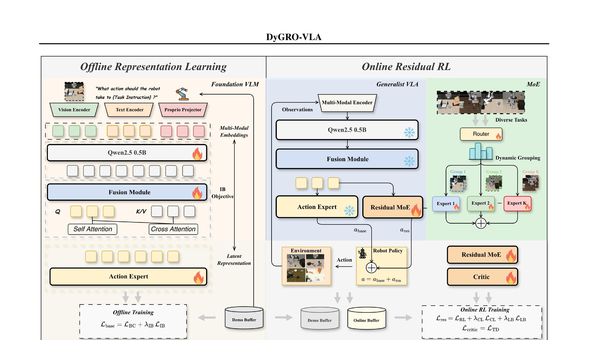

DyGRO-VLA: Cross-Task Scaling of Vision-Language-Action Models via Dynamic Grouped Residual Optimization
Lin 等 · 2026 · arXiv:2605.17486 · Zotero 8P4SRGLT
DyGRO-VLA 把重点从单任务涨点移到多任务不互相破坏：先学共享表征，再用动态分组的 RL residual 决定哪些更新该共享。
§1 Introduction：多任务 VLA 在线 RL 为什么会破坏共享表示
大 VLA 的价值在于一个 backbone 跨任务共享视觉、语言和动作知识；逐任务在线 RL 若全参更新，会让某个任务的稀疏梯度覆盖共享表示，引发 catastrophic forgetting。为每个任务训练独立 residual 虽安全，却无法共享“抓取、靠近、对齐”等跨任务纠错规律，任务数增长时参数和数据都线性扩张。
DyGRO-VLA 先用 information bottleneck 学紧凑跨任务 latent 并训练 base policy；在线阶段冻结 backbone，接入 Mixture-of-RL-Residuals。router 根据任务与 latent 动态选择 top-m residual experts，相关任务共享专家，不相关任务隔离梯度。优化对象从“一个策略怎样更强”变成“哪些 RL 修正应该共享”。
展开原文 · 两阶段结构
“freeze the VLA backbone and optimize the residual MoE”
§2 Related Work：multi-task RL、MoE routing 与 residual policy
multi-task RL 可用共享 trunk、task-conditioned policy 或梯度手术减少冲突；MoE 通过稀疏 routing 让不同输入调用不同参数。Residual RL 在 base action 上学习局部修正，天然保护预训练 policy，却通常一个任务一个 residual。
DyGRO 将 MoE 放到 residual 而非整个 VLA：视觉语言理解仍由共享 backbone 提供，在线 RL 只路由纠错模块。这比全模型 MoE 更轻，也让 expert specialization 可解释；风险是 router 依赖任务标签/表示质量，错误路由会把不相关任务梯度重新混在一起。
§3 问题设定：SFT 到底漏掉了什么
VLA 预训练与 SFT 解决“从观测到动作的模仿”，但部署是闭环过程：动作会改变下一帧，错误会把策略带到演示没有覆盖的状态。普通 RL 微调容易把 generalist 变成只会少数任务的 specialist，根因是跨任务表征被相互干扰。
共享 VLA 表征先通过 information bottleneck 学到跨任务因子；在线阶段用多组 residual 表达不同任务的更新方向。
展开原文 · 核心主张
“strategically mitigating adverse interference on the learned representations”
§4 方法总览：反馈信号怎么走
上一节明确了状态、动作与反馈，现在沿论文原图追踪训练信号。重点不是背模块名，而是判断：哪部分保持预训练先验，哪部分真的被 RL 改写。

1. 离线阶段抽取跨任务共享潜变量
离线阶段从多任务演示提取共享潜变量，区分通用视觉语义与任务特有控制。这个共享表示是后续避免灾难性遗忘的锚点，也为任务路由提供输入。
输入是什么：相机图像或视频，加上任务指令和机器人当前状态。它们还是原始观测，模型尚未把它们变成可用于预测或控制的特征。
这一步究竟做什么：离线阶段从多任务演示提取共享潜变量，区分通用视觉语义与任务特有控制。这个共享表示是后续避免灾难性遗忘的锚点，也为任务路由提供输入。
输出到哪里：经过本步骤处理、含义更明确的中间结果。这个结果会交给下一步“按信息量冻结或保护共享表征”继续处理。
为什么不能省略：它把未经处理的原始问题变成后续模块可以计算的输入，是整条链路的起点。
2. 按信息量冻结或保护共享表征
通过信息量或敏感度评估决定哪些共享参数冻结、哪些允许小幅变化。保护高共享度特征可阻止新任务 RL 把旧能力冲掉，同时仍给任务相关层留下适配空间。
输入是什么：来自上一步“离线阶段抽取跨任务共享潜变量”的产物：经过本步骤处理、含义更明确的中间结果。本步骤还会按论文设置读取当前条件、时间步或训练信号。
这一步究竟做什么：通过信息量或敏感度评估决定哪些共享参数冻结、哪些允许小幅变化。保护高共享度特征可阻止新任务 RL 把旧能力冲掉，同时仍给任务相关层留下适配空间。
输出到哪里：一组比原始输入更紧凑的内部特征；它不是最终动作或画面。这个结果会交给下一步“为任务组建立多支 RL residual”继续处理。
为什么不能省略：它承担上下两步之间的接口；缺少它，前一步产生的信息无法以正确格式或正确含义传到下一步。
3. 为任务组建立多支 RL residual
为相近任务建立多支 residual expert，每支只学习基座动作的修正。分组把互相冲突的梯度隔离开，比为每个任务复制完整 VLA 更省参数，也比单 residual 承受所有任务更稳定。
输入是什么：来自上一步“按信息量冻结或保护共享表征”的产物：一组比原始输入更紧凑的内部特征；它不是最终动作或画面。本步骤还会按论文设置读取当前条件、时间步或训练信号。
这一步究竟做什么：为相近任务建立多支 residual expert，每支只学习基座动作的修正。分组把互相冲突的梯度隔离开，比为每个任务复制完整 VLA 更省参数，也比单 residual 承受所有任务更稳定。
输出到哪里：经过本步骤处理、含义更明确的中间结果。这个结果会交给下一步“动态路由并组合 residual 完成策略更新”继续处理。
为什么不能省略：它承担上下两步之间的接口；缺少它，前一步产生的信息无法以正确格式或正确含义传到下一步。
4. 动态路由并组合 residual 完成策略更新
router 根据当前表示动态混合 residual，再与基座动作合成。训练同时优化路由与专家，但保持主干受保护；新任务主要改变局部路径，因此旧任务受到的干扰更小。
输入是什么：来自上一步“为任务组建立多支 RL residual”的产物：经过本步骤处理、含义更明确的中间结果。本步骤还会按论文设置读取当前条件、时间步或训练信号。
这一步究竟做什么：router 根据当前表示动态混合 residual，再与基座动作合成。训练同时优化路由与专家，但保持主干受保护；新任务主要改变局部路径，因此旧任务受到的干扰更小。
输出到哪里：参数得到更新的模型，或能供下一轮训练使用的新监督信号。这是图中这条链路的最终产物，随后会进入真实执行、模型更新或指标评测。
为什么不能省略：前面的数据或分数本身不会自动改变模型；必须通过损失函数把误差信号变成参数更新。
§5 机制细拆：动作、价值与更新边界
上图给出了宏观流程，但真正决定训练是否稳定的是三个接口：动作以什么粒度出现、反馈怎样变成可学习信号、哪些参数允许被更新。
§6 目标函数：把直觉压缩成可检查的量
前一节说清了信号路径，这里把核心优化目标写成教学化公式。读公式时依次检查：回报影响谁、数据支持在哪里、预训练策略受到什么约束。
- $R_k$
- 第 k 组任务的策略 residual
- $g_k$
- 动态路由权重
- $z,\tau$
- 共享表征与任务上下文
两阶段训练避免从一开始就让任务梯度互相拉扯；基座和共享表征受到保护，动态 residual 负责局部适配。
§7 训练与评测：数字是在什么条件下得到的
只看最终成功率会隐藏数据预算、仿真/真机差异和基座强弱。本节把论文的实验对象与比较关系放回同一张表。
| 策略与动作 | 共享 VLA 表征先通过 information bottleneck 学到跨任务因子；在线阶段用多组 residual 表达不同任务的更新方向。 |
|---|---|
| 训练反馈 | 各任务的环境回报产生 RL residual，router 根据任务和共享潜变量选择、混合这些 residual。 |
| 更新方式 | 两阶段训练避免从一开始就让任务梯度互相拉扯；基座和共享表征受到保护，动态 residual 负责局部适配。 |
| 实验覆盖 | 在 LIBERO-Spatial/Object/Goal/Long、RoboTwin2 代表任务和真实机器人上评估，并专门检查多任务数增加后的遗忘与分布偏移。 |
| 关键对照 | 普通单 residual 或每任务独立微调要么相互干扰、要么无法共享；DyGRO 用动态分组在共享和隔离之间找中间点。 |
§8 结果怎么读：证据、因果与可迁移结论
论文在 LIBERO、RoboTwin2 和真实机器人上报告了多任务训练及分布偏移下的一致提升。
普通单 residual 或每任务独立微调要么相互干扰、要么无法共享；DyGRO 用动态分组在共享和隔离之间找中间点。
多任务 VLA+RL 的主矛盾不是单任务优化强度，而是哪些梯度应该共享。
§9 复现与工程检查
前一节判断了证据强度，复现时还要把训练信号对齐、时间尺度和数据统计逐项落地，否则“同名算法”也可能得到完全不同的结果。
- 任务 ID、router 输入和分组数必须做消融；需要同时报告旧任务保持率与新任务提升；t-SNE 只能作辅助证据。
- 先跑通不加 RL 的预训练/SFT 基线，并保存逐任务成功率与失败视频。
- 同时记录环境步数、真实墙钟时间、人工介入次数、更新次数和推理延迟。
- 把奖励、终止、action chunk mask 与归一化统计做成可视化单元测试。
§10 适用边界与研究启发
动态路由需要足够任务多样性；若任务定义或分组本身偏差大，residual 仍可能固化错误边界。
多任务 VLA+RL 的主矛盾不是单任务优化强度，而是哪些梯度应该共享。